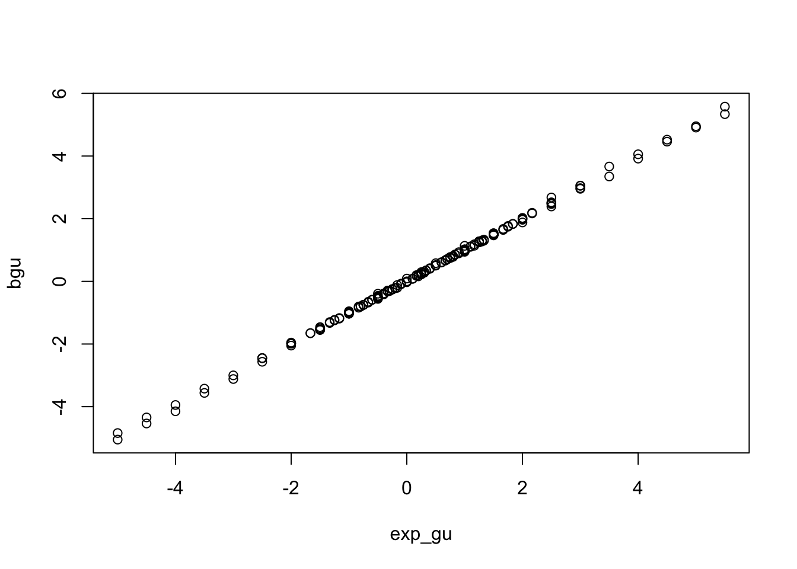
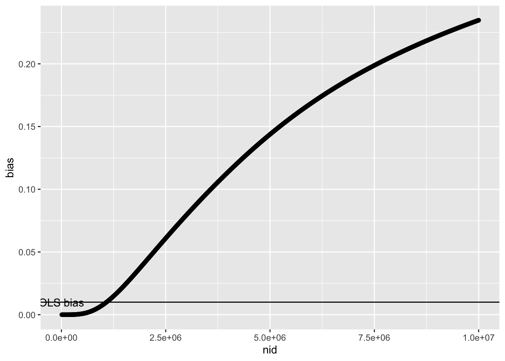
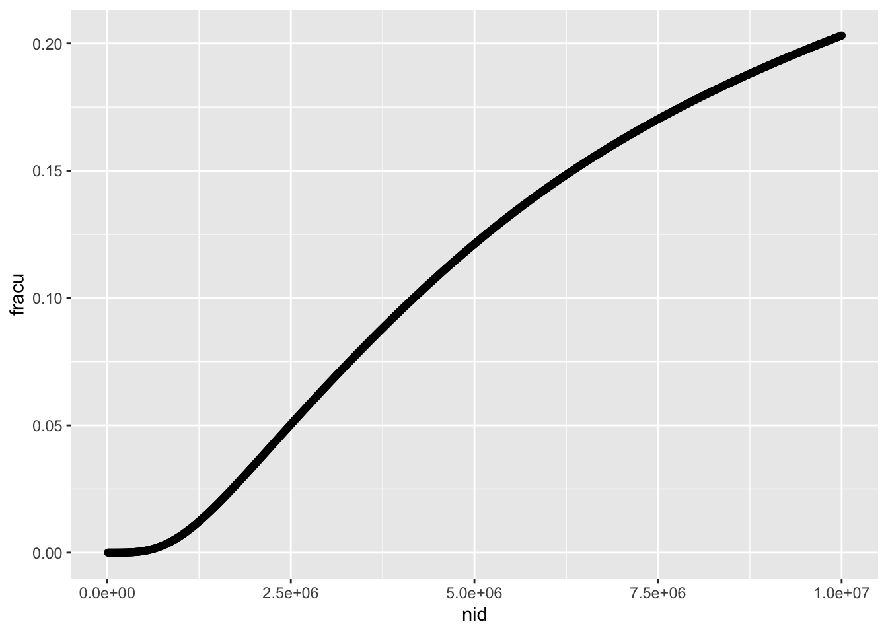
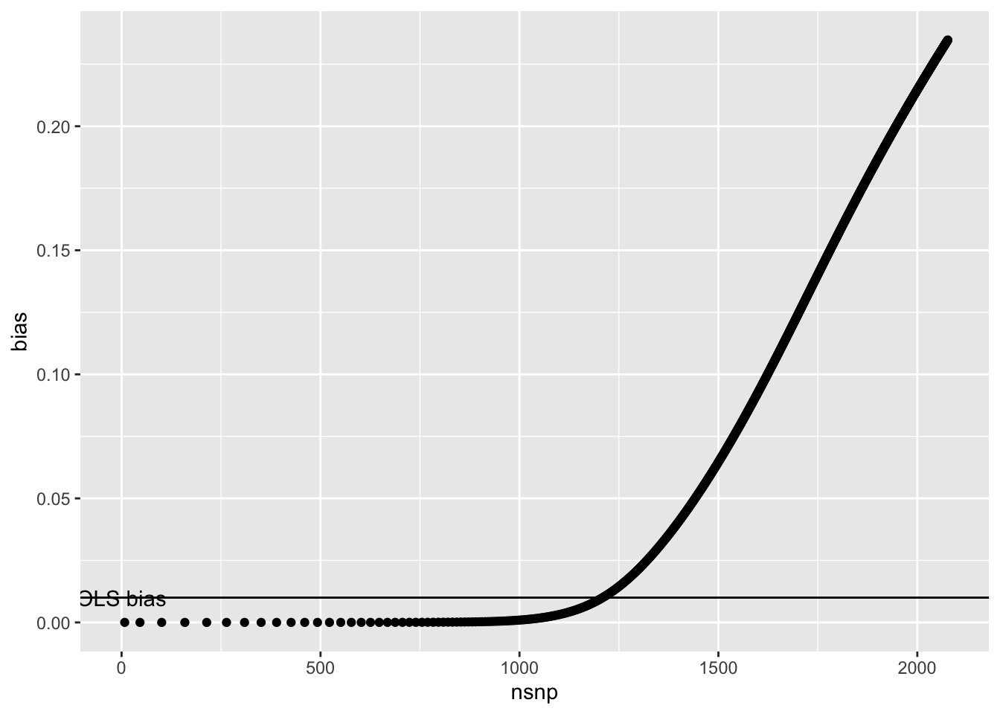
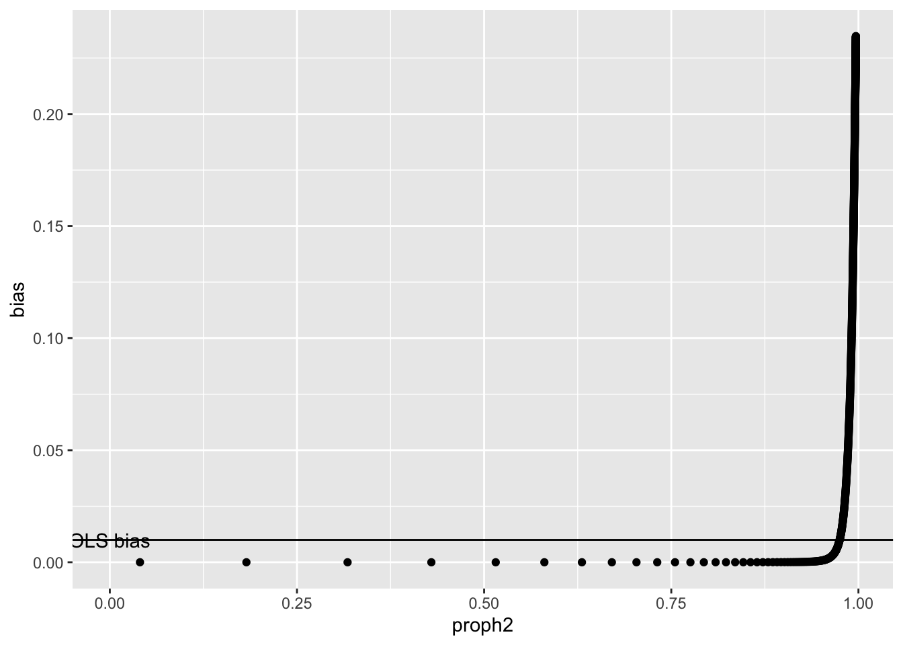
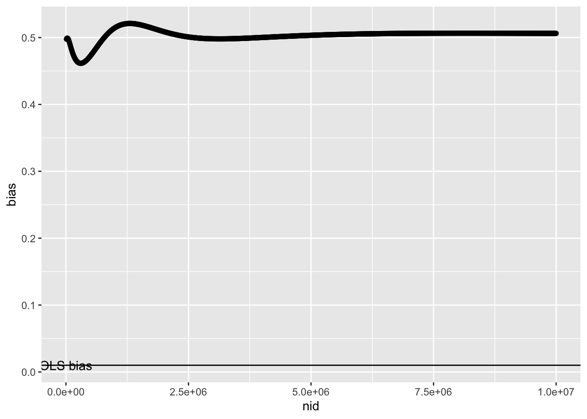
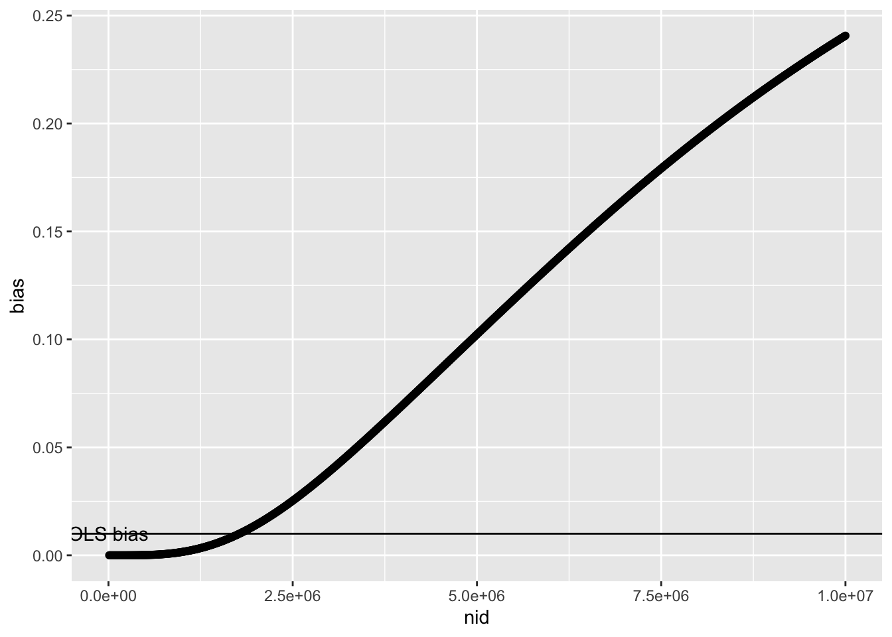

library(dplyr)
library(ggplot2)
library(simulateGP)
library(dplyr)
library(TwoSampleMR)
library(purrr)
library(pwr)Background
Bias from G-U instruments
This is the expected effect estimate of X on Y using an instrument that arises via U:
\[ \beta_{IV,u} = \frac{\beta_{gu} \beta_{uy} + \beta_{gu} \beta_{ux} \beta_{xy}}{\beta_{gu} \beta_{ux}} \]
which simplifies to
\[ \beta_{IV,u} = \frac{\beta_{uy}}{\beta_{ux}} + \beta_{xy} \]
Check that this is correct
nid <- 10000
gx <- rbinom(nid, 2, 0.3)
gu <- rbinom(nid, 2, 0.3)
u <- gu + rnorm(nid)
xl <- gx + rnorm(nid)
param <- expand.grid(
bux = seq(-1, 1, by=0.2),
buy = seq(-1, 1, by=0.2),
bxy = c(0, 0.5)
) %>% filter(bux != 0, buy != 0)
out <- lapply(1:nrow(param), function(i)
{
x <- xl + u * param$bux[i]
y <- x * param$bxy[i] + u * param$buy[i] + rnorm(nid)
p <- param[i,]
p$bgx <- get_effs(x, y, matrix(gx, nid, 1)) %>% mr() %>% {.$b}
p$bgu <- get_effs(x, y, matrix(gu, nid, 1)) %>% mr() %>% {.$b}
return(p)
}) %>% bind_rows()
out$exp_gu <- out$buy / out$bux + out$bxy
plot(bgu ~ exp_gu, subset(out, !is.infinite(exp_gu)))
Similarly, the bias in observational studies is
\[ \beta_{OLS} = \beta_{xy} + \beta_{ux}\beta_{uy} \]
Bias in MR with heritable confounders
Simulate summary statistics for nsnpx causal variants on \(x\) and nsnpu causal variants on \(u\) according to a standard polygenic architecture
\[ \beta_{g.} \sim N(0, [2p(1-p)^S \sigma^2_g]) \]
where \(p\) is the allele frequency, \(S\) is the selection coefficient and \(\sigma^2_g\) is a scaling parameter relating to the additive genetic variance. For SNPs that influence \(x\) via \(u\), the \(\beta_{gx} = \beta_{gu}\beta_{ux}\). For varying values of \(\beta_{ux}\) and \(\beta_{uy}\) we can calculate the expected bias in the MR estimate for each SNP as
\[ $b_{MR,j} \beta_{g_ju}\frac{\beta_{uy}}{\beta_{ux}} \]
As sample size increases, the probability of inclusion of a SNP from GWAS discovery in the exposure \(x\) increases. So the overall bias of an MR estimate, \(b_{MR}\) will be the inverse variance weighted contribution of a SNP given it’s probability of discovery
\[ b_{MR} = \frac{\sum^{M}_{j=1} \beta_{g_ju} w_j z_j}{\sum^{M}_{j=1} w_j z_j} \]
where \(w_j = 1/2p_j(1-p_j)\) and z_j is the power of detection of the SNP at pval < 5e-8 based on its correlation with the trait \(r = 2p(1-p)\beta_{gx}^2\) (assumes variance of x = 1) and for a given sample size.
Here is an example of how
simfn2 <- function(nsnpx, nsnpu, bux, buy, nid, h2x, h2u, Sx, Su, bax=1) {
args <- environment() %>% as.list() %>% as_tibble()
mapx <- tibble(snp=paste0(1:nsnpx, "x"), af=runif(nsnpx, 0.01, 0.99))
mapu <- tibble(snp=paste0(1:nsnpu, "u"), af=runif(nsnpu, 0.01, 0.99))
paramsx <- generate_gwas_params(map=mapx, h2=h2x, S=Sx, Pi=1)
paramsu <- generate_gwas_params(map=mapu, h2=h2u, S=Su, Pi=1)
params <- rbind(paramsx %>% mutate(beta=beta*bax), paramsu %>% mutate(beta=beta * bux))
o <- map(nid, \(i){
ssx <- generate_gwas_ss(params, i)
ssx$beta <- params$beta
ssx$w <- 1/ssx$se^2
ssx$bias <- buy/bux
ssx$bias[grepl("x", ssx$snp)] <- 0
ssx <- ssx %>% mutate(h2 = beta^2 * 2 * af * (1-af))
ssx <- ssx %>% arrange(pval)
x <- ssx %>%
mutate(
n=i,
pow = pwr.r.test(n=i, r=sqrt(ssx$h2), sig.level=5e-8)$power,
u_indicator = as.numeric(grepl("u", snp))
) %>%
summarise(
bias = sum(bias * w * pow) / sum(w * pow),
nsnp = sum(pow),
proph2 = sum(h2/sum(h2) * pow),
fracu = sum(pow * u_indicator) / sum(pow)
)
return(x)
}) %>% bind_rows()
bind_cols(args, o)
}
r1 <- simfn2(
nsnpx = 2000,
nsnpu = 2000,
bux = 0.1,
buy = 0.1,
nid = seq(10000, 10000000, by=10000),
h2x = 0.4,
h2u = 0.4,
Sx = 1,
Su = 1)So as sample size increases this is the expected bias in the MR estimate
ggplot(r1, aes(x=nid, y=bias)) +
geom_point() +
geom_hline(yintercept=0.1*0.1) +
annotate("text", x=0, y=0.1*0.1, label="OLS bias")
Which is essentially the same the proportion of discovered variants that influence x through u
ggplot(r1, aes(x=nid, y=fracu)) +
geom_point()
The shape is somewhat different when looking at it from the perspective of number of variants discovered
ggplot(r1, aes(x=nsnp, y=bias)) +
geom_point() +
geom_hline(yintercept=0.1*0.1) +
annotate("text", x=0, y=0.1*0.1, label="OLS bias")
And also in terms of variance x explained by the discovered SNPs
ggplot(r1, aes(x=proph2, y=bias)) +
geom_point() +
geom_hline(yintercept=0.1*0.1) +
annotate("text", x=0, y=0.1*0.1, label="OLS bias")
So under this model it’s not until you explain quite a large fraction of total heritability does the bias become problematic. This is quite unrealistic because the model assumes that SNPs influencing \(x\) not through a confounder have larger effects. But perhaps more realistic is that all SNPs influence \(x\) through a mediator, but some of those mediators are confounders of the \(x-y\) relationship and some are not.
So if the distribution of instrument effects on x are the same whether going through a confounder or not, the bias is no longer strongly related to sample size
r2 <- simfn2(
nsnpx = 2000,
nsnpu = 2000,
bax = 0.1,
bux = 0.1,
buy = 0.1,
nid = seq(10000, 10000000, by=10000),
h2x = 0.4,
h2u = 0.4,
Sx = 1,
Su = 1)
ggplot(r2, aes(x=nid, y=bias)) +
geom_point() +
geom_hline(yintercept=0.1*0.1) +
annotate("text", x=0, y=0.1*0.1, label="OLS bias")
Try increasing polygenicity of \(u\)
r3 <- simfn2(
nsnpx = 2000,
nsnpu = 4000,
bax = 1,
bux = 0.1,
buy = 0.1,
nid = seq(10000, 10000000, by=10000),
h2x = 0.4,
h2u = 0.4,
Sx = 1,
Su = 1)
ggplot(r3, aes(x=nid, y=bias)) +
geom_point() +
geom_hline(yintercept=0.1*0.1) +
annotate("text", x=0, y=0.1*0.1, label="OLS bias")
The rate at which higher sample size leads MR estimates becomes biased depends on how quickly the GWAS starts to identify instruments acting through \(u\). This will increase under the following conditions
- The effects on \(u\) are larger than those not through \(u\)
- There are many different \(u\) variables through which instruments can be detected
- The heritability of \(u\) is higher
- The polygenicity of \(u\) is lower (i.e. effects are more discoverable)
Ignore the rest
nsnp <- 5000
mapx <- tibble(snp=paste0(1:nsnp, "x"), af=runif(nsnp, 0.01, 0.99))
mapu <- tibble(snp=paste0(1:nsnp, "u"), af=runif(nsnp, 0.01, 0.99))
paramsx <- generate_gwas_params(map=mapx, h2=0.4, S=-0.4, Pi=1)
paramsu <- generate_gwas_params(map=mapu, h2=0.4, S=-0.4, Pi=1)
bux <- 0.1
buy <- 0.1
paramsx <- rbind(paramsx, paramsu %>% mutate(beta=beta * bux))
ssx <- generate_gwas_ss(paramsx, 1000000)
ssx$w <- 1/ssx$se^2
ssx$bias <- buy/bux
ssx$bias[grepl("x", ssx$snp)] <- 0
ssx <- ssx %>% arrange(pval)
o <- map(1:nrow(ssx), \(i){
x <- ssx[1:i,]
tibble(
nsnp=i,
bias=sum(x$bias*x$w) / sum(x$w)
)
}) %>% bind_rows()
o
ggplot(o, aes(x=nsnp, y=bias)) +
geom_point() +
geom_hline(yintercept=bux*buy)simfn <- function(nsnpx, nsnpu, bux, buy, nid, h2x, h2u, Sx, Su, bax=1) {
args <- environment() %>% as.list() %>% as_tibble()
mapx <- tibble(snp=paste0(1:nsnpx, "x"), af=runif(nsnpx, 0.01, 0.99))
mapu <- tibble(snp=paste0(1:nsnpu, "u"), af=runif(nsnpu, 0.01, 0.99))
paramsx <- generate_gwas_params(map=mapx, h2=h2x, S=Sx, Pi=1)
paramsu <- generate_gwas_params(map=mapu, h2=h2u, S=Su, Pi=1)
params <- rbind(paramsx %>% mutate(beta=beta*bax), paramsu %>% mutate(beta=beta * bux))
ssx <- generate_gwas_ss(params, nid)
ssx$beta <- params$beta
ssx$w <- 1/ssx$se^2
ssx$bias <- buy/bux
ssx$bias[grepl("x", ssx$snp)] <- 0
ssx <- ssx %>% mutate(h2 = beta^2 * 2 * af * (1-af))
ssx <- ssx %>% arrange(pval)
o <- map(1:nrow(ssx), \(i){
x <- ssx[1:i,]
tibble(
nsnp=i,
propsnp=nsnp/nrow(ssx),
proph2=sum(x$h2) / sum(ssx$h2),
bias=sum(x$bias*x$w) / sum(x$w)
)
}) %>% bind_rows()
bind_cols(args, o)
}
o <- simfn(1000, 1000, 0.1, 0.4, 10000000, 0.3, 0.3, 0, 0)
ggplot(o, aes(x=nsnp, y=bias)) +
geom_point() +
geom_hline(yintercept=o$bux[1]*o$buy[1])params <- expand.grid(
bux = seq(-1, 1, by=0.2),
buy = seq(-1, 1, by=0.2),
nsnpx = c(2000),
nsnpu = c(2000, 4000)
)
res <- map(1:nrow(params), \(i) {
simfn(params$nsnpx[i], params$nsnpu[i], params$bux[i], params$buy[i], 1000000, 0.4, 0.4, 0, 0)
}, .progress=TRUE) %>% bind_rows()res <- res %>%
group_by(bux, buy, nsnpx, nsnpu) %>%
mutate(propsnp=nsnp/max(nsnp))
obsbias <- res %>% group_by(bux, buy) %>%
summarise(obsbias=bux[1] * buy[1])
p1 <- res %>%
filter(bux != 0, buy != 0) %>%
ggplot(., aes(x=propsnp, y=bias, group=as.factor(nsnpu))) +
geom_line(aes(colour=as.factor(nsnpu))) +
geom_hline(data=obsbias, aes(yintercept=obsbias)) +
facet_grid(bux ~ buy)
p1
ggsave(p1, file="res.pdf", width=15, height=15)params <- expand.grid(
bax = c(0.1, 1),
bux = c(0.1, 0.5, 1),
buy = c(0.1, 0.5, 1),
nsnpx = c(2000),
nsnpu = c(2000, 4000)
)
res2 <- map(1:nrow(params), \(i) {
simfn(params$nsnpx[i], params$nsnpu[i], params$bux[i], params$buy[i], 1000000, 0.4, 0.4, 0, 0, params$bax[i])
}, .progress=TRUE) %>% bind_rows()obsbias <- res2 %>% group_by(bax, bux, buy) %>%
summarise(obsbias=bux[1] * buy[1])
p2 <- res2 %>%
filter(bux != 0, buy != 0) %>%
ggplot(., aes(x=proph2, y=bias, group=as.factor(nsnpu))) +
geom_line(aes(colour=as.factor(nsnpu))) +
geom_hline(data=obsbias, aes(yintercept=obsbias)) +
facet_grid(bux ~ buy + bax, labeller = label_both)
p2
ggsave(p2, file="res2.pdf", width=15, height=15)Use power
simfn2 <- function(nsnpx, nsnpu, bux, buy, nid, h2x, h2u, Sx, Su, bax=1) {
args <- environment() %>% as.list() %>% as_tibble()
mapx <- tibble(snp=paste0(1:nsnpx, "x"), af=runif(nsnpx, 0.01, 0.99))
mapu <- tibble(snp=paste0(1:nsnpu, "u"), af=runif(nsnpu, 0.01, 0.99))
paramsx <- generate_gwas_params(map=mapx, h2=h2x, S=Sx, Pi=1)
paramsu <- generate_gwas_params(map=mapu, h2=h2u, S=Su, Pi=1)
params <- rbind(paramsx %>% mutate(beta=beta*bax), paramsu %>% mutate(beta=beta * bux))
o <- map(nid, \(i){
ssx <- generate_gwas_ss(params, i)
ssx$w <- 1/ssx$se^2
ssx$bias <- buy/bux
ssx$bias[grepl("x", ssx$snp)] <- 0
ssx <- ssx %>% mutate(h2 = bhat^2 * 2 * af * (1-af))
ssx <- ssx %>% arrange(pval)
x <- ssx %>%
mutate(
n=i,
pow = pwr.r.test(n=i, r=sqrt(ssx$h2), sig.level=5e-8)$power,
) %>%
summarise(
bias = sum(bias * w * pow) / sum(w * pow),
nsnp = sum(pow),
proph2 = sum(h2/sum(h2) * pow),
)
return(x)
}) %>% bind_rows()
bind_cols(args, o)
}
params <- expand.grid(
bax = c(0.1, 1),
bux = c(0.1, 0.5, 1),
buy = c(0.1, 0.5, 1),
nsnpx = c(2000),
nsnpu = c(2000, 4000)
)
res3 <- map(1:nrow(params), \(i) {
simfn2(params$nsnpx[i], params$nsnpu[i], params$bux[i], params$buy[i], seq(10000,10000000,by=10000), 0.4, 0.4, 0, 0, params$bax[i])
}, .progress=TRUE) %>% bind_rows()
obsbias <- res3 %>% group_by(bax, bux, buy) %>%
summarise(obsbias=bux[1] * buy[1])
p3 <- res3 %>%
filter(bux != 0, buy != 0, nid < 1000000, bax==0.1, nsnp >= 1) %>%
ggplot(., aes(x=nid, y=bias, group=as.factor(nsnpu))) +
geom_line(aes(colour=as.factor(nsnpu))) +
geom_hline(data=obsbias, aes(yintercept=obsbias)) +
facet_grid(bux ~ buy, labeller = label_both)
ggsave(p3, file="res3.pdf", width=15, height=15)u <- rnorm(1000000)
x <- scale(rnorm(1000000, sd=0.9) + u * 0.1)
y <- scale(rnorm(1000000, sd=0.9) + u * 0.1)
cor(u,x)
cor(u,y)
cor(y,x)sessionInfo()R version 4.2.3 Patched (2023-03-15 r84020)
Platform: aarch64-apple-darwin20 (64-bit)
Running under: macOS Monterey 12.6.2
Matrix products: default
BLAS: /Library/Frameworks/R.framework/Versions/4.2-arm64/Resources/lib/libRblas.0.dylib
LAPACK: /Library/Frameworks/R.framework/Versions/4.2-arm64/Resources/lib/libRlapack.dylib
locale:
[1] en_US.UTF-8/en_US.UTF-8/en_US.UTF-8/C/en_US.UTF-8/en_US.UTF-8
attached base packages:
[1] stats graphics grDevices utils datasets methods base
other attached packages:
[1] pwr_1.3-0 purrr_1.0.1 TwoSampleMR_0.5.6 simulateGP_0.1.2
[5] ggplot2_3.4.0 dplyr_1.0.10
loaded via a namespace (and not attached):
[1] Rcpp_1.0.9 plyr_1.8.7 pillar_1.8.1 compiler_4.2.3
[5] tools_4.2.3 digest_0.6.31 jsonlite_1.8.4 evaluate_0.19
[9] lifecycle_1.0.3 tibble_3.1.8 gtable_0.3.1 pkgconfig_2.0.3
[13] rlang_1.0.6 DBI_1.1.3 cli_3.5.0 yaml_2.3.6
[17] xfun_0.36 fastmap_1.1.0 withr_2.5.0 stringr_1.5.0
[21] knitr_1.41 generics_0.1.3 vctrs_0.5.1 htmlwidgets_1.5.4
[25] grid_4.2.3 tidyselect_1.2.0 glue_1.6.2 R6_2.5.1
[29] fansi_1.0.3 rmarkdown_2.16 farver_2.1.1 magrittr_2.0.3
[33] scales_1.2.1 htmltools_0.5.4 assertthat_0.2.1 colorspace_2.0-3
[37] labeling_0.4.2 utf8_1.2.2 stringi_1.7.8 munsell_0.5.0